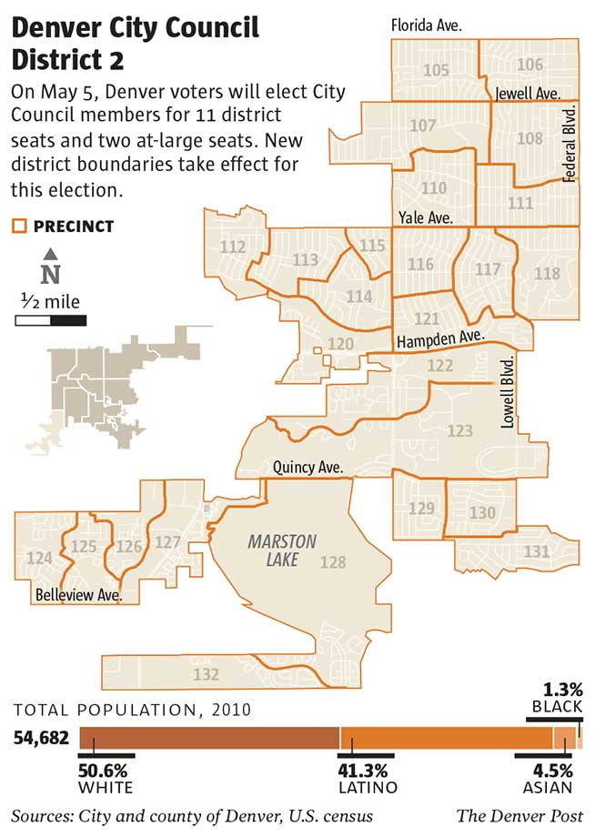
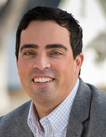
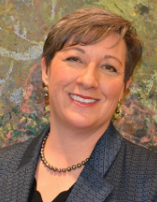
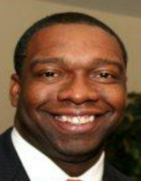

Denver City Council Candidate Q&As
VIDEO INTERVIEWS WITH CANDIDATES (Will be posted Wednesday, May 20)
On June 2, Denver voters in four City Council districts will choose between the top two vote-getters in the May 5 election. New district boundaries took effect for this election (see map for districts with a runoff).
In an effort to provide Denver voters with information about City Council candidates, The Denver Post asked them to complete an extensive questionnaire. Read the responses below for all runoff candidates.
MORE INFO
- On The Denver Post
- DenverPost.com/council
- The Spot politics blog
- On Twitter
- Denver Post politics news @denverpolitics and The Spot @thespot
- Politics Editor Chuck Plunkett @chuckplunkett
- Reporters Jon Murray @jonmurray, Lynn Bartels @lynn_bartels and Joey Bunch @joeybunch
- On Facebook
- Denver Post Politics
VOTER INFORMATION
- DISTRICT MAP
- Interactive map shows new Denver City Council district boundaries; click here to show full-screen map
- IMPORTANT DATES
- May 15
- Mail ballots go out • 24-hour ballot drop-off boxes open
- May 18
- Elections Division voter service and polling center opens
- May 26
- All other voter service and polling centers open
- June 2
- Election Day, 7 a.m.-7 p.m.
- CONTACT
- Website
- denvervotes.org
- elections@denvergov.org
- Phone
- 720-913-VOTE (8683)
DENVER CITY COUNCIL DISTRICT 2 | KEVIN FLYNN • JOHN KIDD
CLICK FOR DISTRICT RACE STORY • DETAILED MAPDenver City Council District 2: Suburban slice looks to stay the course
By Kieran Nicholson
The Denver Post
Denver's City Council District 2, in the southwest corner of the city, is known for its relatively affordable housing and a suburban feel.
It also has been a rarity in left-leaning Denver, electing a series of conservative council members.
Voters on May 5 will decide whether to follow that course in choosing one of five candidates to succeed three-term Councilwoman Jeanne Faatz, who is term-limited.
"Historically, the district has been somewhat of an outlier in Denver politics," Eric Sondermann, an independent political analyst, said of the predominately working-class district. "It has been far more conservative than other parts of the city, almost quasi-suburban."
Ben Blanchard, president of the Bear Valley Improvement Association, a 50-year-old-plus community group that encompasses about 1,500 homes, said the district mostly just needs the city's help with nuts-and-bolts issues.
"The city hasn't focused on upgrading things like sidewalks," Blanchard said. "They're sinking and cracking here."
Read the rest of this story at DenverPost.com
×- Kevin Flynn

- AGE
- 62
- FAMILY
- Married to Harriet Novak, five grown children between us, two grandchildren and a third on the way
- PROFESSION
- Communications
- EDUCATION
- BA in Philosophy, La Salle University
- EXPERIENCE
- Newspaper reporter and editor for 8 years in New Jersey and 27 years at the Rocky Mountain News, as City Hall reporter. Won numerous journalism awards for investigative and public service reporting. Inductee into Denver Press Club Hall of Fame, former president of Society of Professional Journalists Colorado Chapter and Denver Press Club.
- NEIGHBORHOOD
- Marston
- YEARS IN DENVER
- 34 years
- HOMETOWN
- Easton, Pa.
- WEBSITE
- flynnforcouncil.com
- Kevin-Flynn-for-Denver-City-Council-2
- @kflynncolo
-
- STORIES ABOUT KEVIN FLYNN
- Denver City Council District 2: Suburban slice looks to stay the course • March 26
Kevin Flynn
Why are you running for City Council?
I am running because I have the experience the position requires to provide leadership, perspective and institutional memory to a City Council that will have at least six new members. I was a reporter at the Rocky Mountain News from 1981 until the day it closed in 2009. I was the paper’s City Hall reporter and budget-finance expert for most of those years. Not only will I ask the tough questions; as a member of the Denver Press Club Hall of Fame, I have the demonstrated skills to ask the RIGHT questions. As a City Council member, I will continue District 2’s tradition of fiscal discipline and fierce independence. District 2 has the reputation of sending budget hawks to the council, and by background and experience, I will be that person on the next council. Retired City Council staff director John Bennett said of me: “Kevin knew more about the city government than the people who were running it.” That is why I have been endorsed by Doris Hackworth, wife of our late Councilman Ted Hackworth, retired Police Chief Ari Zavaras, retired Safety Manager John Simonet, as well as seven former City Council members including Cathy Reynolds, Ed Thomas and Cathy Donohue. I am the only candidate to spell out specific actions I intend to take to implement my platform of increased public safety, better economic growth and improved quality of life. They are spelled out on my website, FlynnForCouncil.com.
What is the biggest challenge affecting your district, and what would you do as a council member to help resolve it?
The most pressing issue is public safety. Auditor Dennis Gallagher released an audit last year of response times in all six police districts. The one covering southwest Denver had the longest average response times in the city, growing from 12 minutes in 2008 to 16 minutes in 2013. It is due mostly to the loss of 225 officers to retirement and other departures following the Great Recession, when the city couldn’t afford to pay for new police recruits. The geography of southwest Denver also delays response; there are so few through-routes that officers sometimes have to cut through the city of Littleton to get to the southern part of the district. The police commander has instituted some tactical changes that have started to bring that average down. But with city revenues growing again and police academy classes back on, the most effective solution is to assign more of the new officers to southwest Denver. I want to reduce the average response time by at least 25 percent, in line with the rest of the city. This is outlined on my website at FlynnForCouncil.com/issues.
Briefly describe two other issues in your district that you would work on as a council member.
We need improvement in quality-of-life services. Some of our long-time residents have told me they have seen a gradual decline in such things as street and park maintenance – cuts that were made in the recession, but which should be restored as basic city services. My wife and I knocked on the door of a woman who has lived next to Sanderson Gulch for 35 years, and who has been to Denver Health three times for severe allergic reactions to the invasive weeds growing in the gulch since the city stopped mowing the banks. Another 40-year resident of Mar Lee whom we met said she was told she should move to a better ZIP Code if she expected more. That is unacceptable. In southwest Denver, we don’t move to better ZIP Codes; we make our ZIP Codes better.
The final issue is better economic growth in Council District 2. The economy is growing again and southwest Denver hasn’t fully taken advantage. There are several modest redevelopment opportunities in our commercial areas, especially at Sheridan and Evans, which has the potential to be a vibrant mixed-use district. It’s a very challenging task but it can be a great improvement to the district. It can be the seed bed for new locally owned small businesses and employment, an arts center or any number of pedestrian-oriented attractions.
As its population grows, Denver must deal with increased traffic congestion and scarcer parking. How would you approach challenges associated with new development?
The 2000 Comprehensive Plan envisioned a city that values sustainability and livability for all of its residents. New development and density should be focused on areas where we are investing billions of dollars expanding rail mass transit and mobility options, and on the Areas of Change outlined in Blueprint Denver. There are great opportunities there to expand affordable housing, and to meet the demand for new housing that we are currently missing. I would focus on reinforcing the Areas of Stability outlined in the Blueprint through maintenance and improvement of city infrastructure, which encourages private investment by homeowners. I will ensure that neighborhood input is obtained early in the development process in order to identify contentious issues and work toward resolution. The city should work closely with RTD to identify more transit options to serve new development, and investigate opportunities for alternative mobility including expansion of car-sharing and Denver B-cycle to other areas of the city.
Denver's policies to address homelessness have focused on two approaches: expanding support services, on the one hand, and passing restrictions or bans on panhandling and camping in public spaces. How should Denver address the issue in the future?
The city already is taking steps that I believe are innovative and hold promise. It has identified several hundred chronic homeless and transient people on the streets of Denver who have been cycling in and out of various city services. This core population is responsible for more than $11 million per year in social service costs borne by the city. Getting most if not all of them into mental health, substance abuse or residential treatment programs may crack the core of the problem – a tipping point, hopefully, in easing the burden on the streets. This strategy is innovative and reflects my position that targeting the core will help ease the problem at the margins. I support the efforts of private, nonprofit and public entities that are working to ensure that when a homeless person sleeping in a park or in a business doorway is asked to “move along,” there is a place to which they can actually move other than the next park or doorway down the line, one that might offer diversion and treatment.
Do you support the city's use, and possible expansion, of red-light cameras and photo speeding enforcement?
I differentiate between red light cameras and speeding cameras. Photo radar to enforce speed limits in residential areas, school zones and parks is effective and should continue. Red light cameras are not. I don’t want to photograph traffic accidents, I want to prevent them, and proper traffic engineering will do that. Traffic engineers know that red light running can be virtually eliminated through proper timing of the yellow light. Fort Collins added one second more yellow time at a camera intersection in 2005, and saw less than one driver per day running that red light. But until 2009, Denver used the legal minimum of just three seconds of yellow, which is too short for traffic moving faster than 30 mph. After I reported this in the Rocky Mountain News, Denver’s traffic engineers did a blind test. They took video at four busy intersections with three-second yellow lights and counted numerous red light violations. Then they added a half-second or so to the yellow light and took more video. The result was the near-elimination of red-light running. Based on that, Denver has lengthened yellow lights all around the city. If Denver identifies problem intersections and installs red light cameras instead of taking proven traffic engineering countermeasures, it is knowingly maintaining an unsafe condition.
If elected, would you accept or return raises that will increase council members' salaries to $87,623 in July and to $91,915 a year later, a total 10.3 percent increase?
I was the first candidate to come out in firm opposition to the raise. I issued a press release against it that was covered by the Denver Post and Westword. The previous salary was more than sufficient, in my opinion, and I personally lobbied several council members against it. But in the end, it passed and is the new salary level. I won’t work for less pay than my colleagues, so I will accept it – just as past and current council members who opposed pay raises accepted them if they passed. But what I will also do is take the lead on the council to identify a more politically palatable way to set council salaries every four years. Otherwise, I commit right now to voting “no” on the next raise discussion in four years.
Do you think the police reforms that Chief Robert White has implemented have worked, or is there more to be done?
The emphasis on community policing has had success, and I have spoken with officers who believe they are getting better results. But there is much more to be done internally. There appears to be a disconnect between the chief and the rank-and-file that needs to be addressed. Chief White has been doing a great job in connecting with the community, and I would advise him to do more to connect with the officers.
Denver's new downtown jail has faced enormous challenges, including cases of inmate abuse. What role should the council play in fixing problems in jail management?
On the council, I will work with the mayoral administration to implement the recommendations in Auditor Dennis Gallagher’s recent report that detailed mismanagement, understaffing and delays in analyzing data that could more quickly resolve problems. The council will play a major role in fixing problems at the jail if it requires new operating expenditures to ensure adequate staffing levels are met, or capital expenditures to make physical changes that may be required to ensure the sheriff’s deputies can conduct their duties safely and responsibly. In addition, the council can and should have a consulting role with the administration in addressing management issues.
Do you support the city's plan to pay for the bulk of the National Western Center plan by extending lodging and car rental taxes? If not, what other options should the city pursue?
Yes. Voter approval is required in order to authorize a renewal of lodging and car rental taxes that are scheduled to expire, and I would favor that for two reasons. First, it does not change the tax rate, it simply extends the current rate. Second, the tax is paid for the most part by visitors and tourists who are choosing to come to Denver. And it would not be an increase for them either, since it is the existing rate. The comprehensive plan to revamp the National Western Center, reconnect neighborhoods, open up the South Platte River to the people and leverage RTD’s construction of a rail transit station there is important to the revitalization of Globeville, Swansea and Elyria.
What do you see as Mayor Michael Hancock's greatest strength and greatest weakness?
His greatest strength is his genuine care and concern for people. I was fortunate to witness this personally. Passionate concern for people as individuals is one of the most important traits for a public servant to possess. His greatest weakness is allowing his schedule to become so busy that he hasn’t had time to become familiar with some of the pressing issues in my southwest Denver district. I will ensure that he hears about our needs in District 2.
Should Denver's civil service employees be granted collective bargaining rights, or do you support the city's current employment system?
I support the Career Service system because I believe it has worked well. Any change would have to be approved by voters, and several times in the past, voters have rejected charter proposals for collective bargaining that were referred to the ballot by the council. If workers pursue collective bargaining, I believe they should approach it through a ballot initiative.
Are Denver's regulations on sales of recreational marijuana working? If not, what actions by the city would you support?
They are working for the most part, but one area that is costing us more than it should is in the area of licenses and inspections. I would propose that locations holding multiple licenses have the option of renewing all at the same time, so that required city inspections can be conducted during one visit rather than having inspectors visit the location multiple times.
Should Denver allow public consumption of marijuana, either fully or with restrictions?
No. Amendment 64 specifically prohibits public consumption. The state constitution would have to be amended again to allow it.
Should Denver ban tobacco smoking outdoors along the 16th Street Mall or in city parks?
No.
When it comes to the city's budget, how would you change current spending priorities for city services?
With all of the attention that is drawn by large projects, I would like to see some additional priority on spending for small projects. For example, while campaigning I visited the home of an Iraq War veteran who uses an electric wheelchair to get around. But the house where his family raised him is on a street that has no sidewalk, curb, gutter or drainage. It has just a gravel shoulder – in the middle of the city. When there is snow or ice along the road, he can’t make it three blocks to the bus stop. This veteran shouldn’t have to move from his family’s home to be able to get around. Another example of needed small projects: Many District 2 residents have complained about speeding through the neighborhood. Periodic stepped-up enforcement can produce stop-gap improvements. But based on my transportation experience, I know that drivers naturally go faster when the road invites it. Wide streets produce higher speeds. Small projects such as bulb-outs, widened sidewalks or designated bike lanes that narrow the roadway can reduce speeds.
- John Kidd
- AGE
- 52
- FAMILY
- Wife, Joesolyn, son, John III, and daughter, Jourdan
- PROFESSION
- Insurance Consultant
- EDUCATION
- Bachelors of Science
- EXPERIENCE
- Current Board Member/Treasurer Grant Ranch Master Homeowner's Association; Current Board Member/Treasurer Belvedere Homeowner's Association
- NEIGHBORHOOD
- Grant Ranch
- YEARS IN DENVER
- 21 years
- HOMETOWN
- Lemoore, Calif.
- WEBSITE
- johnkidd.org
- john4denver
- @John4Denver
-
- STORIES ABOUT JOHN KIDD
- Denver City Council District 2: Suburban slice looks to stay the course • March 26
John Kidd
Why are you running for City Council?
I’m running for City Council because I believe the people in my district need a person with my skills and abilities to represent them and be their voice of reason on the council regarding issues important to them. As a business professional with over 23 years’ experience in accounting, auditing, insurance, and information technology with several Fortune 500 companies, I have the necessary skills and experience needed to identify efficiencies and cost savings that can free up money for basic city services. I currently serve my community as Treasurer and Board Member of two homeowner’s associations. I work with fellow board members to keep our Southwest Denver community vibrant and most importantly, financially sound. I recently earned the endorsement of District 2 Councilwoman Jeanne Faatz because of my civic and charitable service to the community and the commitment I’ve made to represent the citizens of Southwest Denver with honesty, transparency, and accountability.
What is the biggest challenge affecting your district, and what would you do as a council member to help resolve it?
Public Safety - As a council member, I would work with representatives of public safety to improve response times and to make sure the fine men and women who serve our community have the necessary resources they need to do their job safely and effectively. According to City Auditor Dennis Gallagher’s report on response times, our district has one of the slowest response times (over 16 ½ minutes from 911 Dispatch to arriving on the scene) in Denver. This is a matter of not having enough officers and resources to patrol all the areas of a very large, geographically challenging district. The extreme southern part of District 2 is situated between Jefferson and Arapaho counties, the cities of Lakewood, Littleton, and Denver along with some rather unique boundary lines which complicate the determination of jurisdiction at the time of the 911 call. I would also support increased efforts to enlist the help of citizens in crime prevention through the Denver Police Department Volunteers In Police Service Program (VIPS) and promote neighborhood watch programs.
Briefly describe two other issues in your district that you would work on as a council member.
Affordable housing is a major issue for Downtown Denver and also in District 2. We’ve seen unprecedented demand for housing over the past several years as Denver’s housing market has bounced back at a rather astonishing rate. From the Denver Metro Association of Realtors March 2015 report, over the past year, we’ve seen single family housing prices increase by over 19% and condo prices by almost 7% as available inventory has dropped to record lows. I’ll work with other members on the council to continue efforts to create more affordable housing options through existing programs available from the Denver Housing Authority and Federal Housing and Urban Development programs that provide block grants to assist residents of growing cities like Denver find affordable housing or assistance with housing expense.
Code Enforcement – In order to keep our neighborhoods beautiful and vibrant, I’ll make sure the existing zoning codes are enforced and work to create a volunteer-based blight remediation program that assists those with special needs or circumstances that cannot maintain their property without help. In my opinion, that’s what good neighbors do by helping each other out in times of need.
As its population grows, Denver must deal with increased traffic congestion and scarcer parking. How would you approach challenges associated with new development?
People are moving to Denver in record numbers to enjoy the many great benefits our wonderful city has to offer. With unemployment at a record low 4% and a strong demand for highly skilled, highly educated workers, Denver is attracting the best and brightest from all over the country and even the world. The new developments that are in the process of being built right now are barely enough to keep up with the surge of people currently relocating to Denver. That’s why it is very important for city government to manage growth in order to deal with uncontrolled urban sprawl, high density housing issues, and, of course, transportation and infrastructure overload. As detailed in the Blueprint Denver transportation and land use plan, the city must follow this comprehensive plan in order to grow the city in a “balanced”, responsible manner with a focus on livability and improving the quality of life for not just a select group of people, but for all the residents of Denver. We are seeing the fundamental change from traditional tract home neighborhoods like Stapleton, Globeville, Elyria, and Swansea in areas of growth to Transit Oriented Developments (TOD’s). Our challenge as a city is to make sure we are doing this in a manner that doesn’t overburden the taxpayers, overextend the city’s credit, or simply get in the mode of trying to do too much too fast. Smart growth through proper planning is the way to go in my opinion.
Denver's policies to address homelessness have focused on two approaches: expanding support services, on the one hand, and passing restrictions or bans on panhandling and camping in public spaces. How should Denver address the issue in the future?
I applaud the efforts of the Denver Business Improvement District and the Downtown Denver Partnership in supporting the many faith-based initiatives that are working to make Downtown Denver safer and also efforts by individuals to guide those seeking assistance to the many available Downtown centers and resources for the homeless. In my opinion, the City Council should continue to support efforts like the Lawrence Street Community Center and the St. Francis Center outreach to help those truly seeking assistance. For those who have no desire for help, the Council needs to support the efforts of law enforcement to keep Downtown Denver safe for tourists and residents and support full enforcement of the unpopular camping ban.
Do you support the city's use, and possible expansion, of red-light cameras and photo speeding enforcement?
I do support the use of red-light cameras at intersections where drivers just blow right through the red light without any regard to safety. Intersections where these cameras are installed should be clearly identifiable with signs that alert drivers that photo red-light cameras are in use and should have extended times for yellow lights and also some type of countdown mechanism to alert a drive as to how much time they have before the light turns red. This would help prevent some of the rear-end collisions happening when drivers slam on the brakes in fear of getting a ticket. My major concern with the red-light ticketing process is that tickets are being issued to drivers for just going past the white line. I feel that during the review of white line violations, the technician should only ticket drivers who have driven past the white line into the cross walk only when pedestrians are present.
I do support the use of photo radar on neighborhood side streets where children are present, construction zones, school zones, and areas where excessive speeding is an issue. I would not support the expansion of red-light cameras and photo radar because I believe Denver currently has an appropriate amount of equipment in place to help reduce vehicle and pedestrian accidents at troublesome intersections from red light violations and slowing down driving speeds in high risk areas.
If elected, would you accept or return raises that will increase council members' salaries to $87,623 in July and to $91,915 a year later, a total 10.3 percent increase?
On January 13th this year, of the over 50 municipal candidates for office at that time, I was the only candidate who attended the City Council Finance and Services Committee meeting and spoke out in opposition of the 10.3% raise. I opposed this raise simply because the council had just received a 6 % raise over the past two years (3 % in 2013 and another 3% in 2014). I opposed the 10.3% raise because in my opinion, even though members of the council had full authority to approve the full salary increase, it just reinforced a perception by the public that government is not living within its means. This was the council’s opportunity to show the voters they’re concerned with controlling the cost of city government. I will not take this raise because I personally believe a 10% pay increase is out of line with salaries in other comparable municipalities and does not reflect typical private sector salary increases in Denver. As I stated in my public testimony, once elected, I will not accept the salary increase and would give the difference to a charity or charities of my choosing within my district or simply return it to the General Fund.
Do you think the police reforms that Chief Robert White has implemented have worked, or is there more to be done?
I support public safety and have the utmost respect for the men and women of Denver’s law enforcement. I believe that some of the reforms Chief White has implemented are good, but some have had unintended consequences. His requirement that officers wear body cameras is a step in the right direction along with enforcing disciplinary action for officer falsehoods. His team concept provides better supervision but requires more officers than are currently available, and unfortunately, will not be available any time soon as we lose more officers to retirement and attrition. His decision to flatten the organizational structure by eliminating the rank of captain sounded good initially but was more than offset by the addition of more commander positions. Officer morale is at an all-time low after the Chief’s decision to allow the desecration of the fallen officer’s memorial. I feel the Chief needs to make amends with not only the officers, but also with restoring confidence in the public that lawless acts will not be allowed to happen without intervention by law enforcement.
Denver's new downtown jail has faced enormous challenges, including cases of inmate abuse. What role should the council play in fixing problems in jail management?
The City Auditors Office headed by Auditor Dennis Gallagher just recently released on March 19th, 2015 a very alarming audit of the Denver Sheriff’s Department management of the Denver jail. From the audit, Auditor Gallagher stated “DSD’s management of jail operations has been poor, harming the City’s reputation, increasing risk to sheriff deputies and inmates, and wasting taxpayer resources.” In my opinion, the Denver voters were sold a bad bill of goods when we were asked to approve the funding for the new jail. The promise made to us was that the new jail would save the taxpayers money by streamline the incarceration process and reducing the number of personnel needed to operate the jail. To date, there are major concerns with spending for overtime and severe issues with the safety of deputies and inmates that raise more questions than answers. The jail has many blind spots that are extreme safety issues and need to be fixed now. I understand that in May, hired consultants will present their initial recommendations in solving the jail crisis. I feel the council should take steps now to address some of the audit recommendations to improve jail management and approve funding for additional personnel to alleviate understaffing.
Do you support the city's plan to pay for the bulk of the National Western Center plan by extending lodging and car rental taxes? If not, what other options should the city pursue?
Yes. The National Western Center plan includes not just the stock show but many other attractions for year-round use. Colorado State University and the Museum of Nature and Science are just two of the partners in this project. I feel it is a perfect use of taxes paid primarily by tourists through lodging and car rental taxes.
What do you see as Mayor Michael Hancock's greatest strength and greatest weakness?
As Vice-President of Turnabout, Inc. a jobs program for non-violent first time offenders, I first met Mayor Michael Hancock when he was a city councilman at a church in South Denver where we both attended a community forum to address homelessness and ways to reduce recidivism at the Denver County Jail. The Mayor greatest strength is that he is a very likable person who is open to public input and makes himself extremely accessible to the people of Denver. In my opinion, the Mayor’s greatest weakness is his inability to appoint top–level Public Safety Officials, specifically, the last two Denver Sheriffs as this department is in desperate need of a highly qualified, strong leader to get the department back on track.
Should Denver's civil service employees be granted collective bargaining rights, or do you support the city's current employment system?
I do not believe that Denver’s civil service employees need to have collective bargaining rights simply because they have an excellent employment system in place. The Office of Human Resources (formerly Career Services Authority) does an excellent job protecting civil service employees rights, providing exceptional compensation and benefits, and hiring and promoting employees based upon a competitive merit process.
Are Denver's regulations on sales of recreational marijuana working? If not, what actions by the city would you support?
I do believe that Denver’s regulation on the sale of recreational marijuana for the most part is working. The areas of concern that have been identified like unlicensed grow facilities and unlicensed sales are being ferreted out and shut down by the FBI, DEA, and local law enforcement through sting operations.
Should Denver allow public consumption of marijuana, either fully or with restrictions?
Amendment 64 specifically prohibits the public consumption of marijuana. I support the intended will of the voters who approved Amendment 64 and feel that public consumption of marijuana should not be allowed due to concerns with public safety, health and welfare.
Should Denver ban tobacco smoking outdoors along the 16th Street Mall or in city parks?
Yes, I believe there should be a tobacco ban on the 16th Street Mall mainly because this is a pedestrian mall used by many families with small children and those with respiratory issues who are adversely affected by second hand smoke. Additionally, I would support a smoking ban on the Mall due to the many restaurants with open air seating for patrons who are also affected by second-hand smoke from smokers at tables next to them or from smokers walking along the mall.
In regards to city parks, I don’t believe it’s necessary to impose a smoking ban simply because of the inherent openness of the park. Unlike city streets where there is no option to avoid a person who is smoking in front of you as you are walking or smoking as you walk by them, at least in a park you have the option to go to an area where there are no smokers if you prefer.
When it comes to the city's budget, how would you change current spending priorities for city services?
I believe there should be more emphasis on fully funding basic city services first and foremost. The diversion of monies from the general fund to special projects or other purposes has to stop. Additionally, street maintenance, additional lane miles paved, and increased public safety funding for more police officers were promises made to the voters with the passage of Measure 2A in 2012. Unfortunately, Denver’s streets are in need of serious repair and repaving and the Denver Police Department is still dealing with not having enough new officers graduating from the Police Academy to replace those officers retiring or from attrition.
DENVER CITY COUNCIL DISTRICT 7 | AARON GRECO • JOLON CLARK
CLICK FOR DISTRICT RACE STORY • DETAILED MAPIssues reflect entire city in race for south Denver District 7 City Council seat
By Jon Murray
The Denver Post
The South Platte River splits south Denver's City Council District 7 nearly down the middle, but its halves are hardly mirror images.
In the eastern part, neighborhoods including Baker and Platt Park thrive but face redevelopment pressures and surging housing costs. Neighbors of vibrant commercial and entertainment districts — and the city's largest concentration of pot shops, on Broadway — are dealing with traffic congestion and parking crunches.
But travel west across the South Platte River and the picture is different, the needs of the neighborhoods more fundamental.
Residents of working-class Athmar Park and Ruby Hill drive over pockmarked streets, walk on sidewalks that stop short and want nicer city services, including better recreation centers. Light-rail stations aren't far away — but crossing the river or Santa Fe Drive is tricky without a car.
Along the redrawn district's western border, Federal Boulevard offers empty lots and blighted properties that could be prime for new uses, if investors had interest.
Read the rest of this story at DenverPost.com
×- Aaron Greco
- 
- AGE
- 38
- FAMILY
- My wife, Tessa, and I are the proud parents of a 15-month old daughter, Rosemary.
- PROFESSION
- Local Government Liason at Colorado Department of Transportation
- EDUCATION
- B.A. Humanities, Fort Lewis College
- EXPERIENCE
- Baker Historic Neighborhood Association Board Member
- NEIGHBORHOOD
- Baker
- YEARS IN DENVER
- 6 years
- HOMETOWN
- Cañon City
- WEBSITE
- grecofordenver.com
- grecofordenver7
- @aarongreco1
-
- STORIES ABOUT AARON GRECO
- Issues reflect entire city in race for south Denver District 7 City Council seat • April 6
Aaron Greco
Why are you running for City Council?
I’m running for City Council because I want my daughter, Rosemary, and her peers to grow up in a diverse, sustainable, and dynamic city. The City Council plays an important role in shaping Denver’s neighborhoods into vibrant areas with multimodal transportation access, universally accessible parks and recreation, thriving artistic and cultural resources, and bustling local business districts. I want to put my diverse experience in collaborating with communities across the state at every level of government to work for the benefit of all of Denver’s citizens.
As an aide to two U.S. Representatives from Colorado – Ed Perlmutter & John Salazar – I’ve worked across the state and in Washington to encourage partnerships, unify community voices, and develop policies to increase investments in public infrastructure, while preserving our most precious resources. Today, as a transportation professional, I work with Colorado communities to develop bicycle and pedestrian projects, road and bridge projects, and create greater access to a more robust public transit system.
What is the biggest challenge affecting your district, and what would you do as a council member to help resolve it?
Like most working families, young professionals, and millennials in Council District 7, our family is faced with the challenge of rising home prices and cost of living in Denver. We never thought we’d face the possibility of being priced out of our neighborhood – my wife, Tessa, and I both have great jobs – but with challenges like student loan debt, the rising cost of day care, and a crisis with housing affordability in Denver, families just like ours are looking at other options.
The next City Council has the opportunity to make Denver great for generations to come. To ensure that Denver’s students, professionals, and seniors can continue living in in the city we love, we must tackle a variety of issues with forward-thinking and fiscally responsible policies. As a member of the City Council, I’ll collaborate with my colleagues and the administration to grow the supply and diversity of affordable and attainable housing options in Denver while maintaining the character of our unique neighborhoods. That means taking carefully considered action to encourage responsible density and an interconnected, multimodal transportation system that minimizes the additional strain on our congested roadways.
Briefly describe two other issues in your district that you would work on as a council member.
District 7 has unique challenges with an interstate, a river, and several North-South arterials dividing communities. Neighborhoods like Ruby Hill and Athmar Park are in close proximity to transit hubs, but have no easy way to connect with those hubs outside of an automobile. Neighborhoods like Platt Park, Baker, West Wash Park, and Overland can’t access the South Platte River Trail safely. Any new developments along the South Platte corridor must include incentives for connectivity upgrades and investments. This can be done through a variety of means. We need a leader who will promote partnerships between multiple government jurisdictions and the private sector to achieve greater multimodal connectivity in Council District 7.
Transit-oriented, multi-use density has to be promoted in areas like the former Gates Factory location, the Shattuck superfund site, the former RTD bus barn location, and other areas adjacent to light rail. These kinds of developments have the least impact on parking and congestion and are largely located in former industrial or light-industrial areas. In order to accommodate growth responsibly we’ll need to promote these areas for redevelopment.
As its population grows, Denver must deal with increased traffic congestion and scarcer parking. How would you approach challenges associated with new development?
We are not going to be able to build enough streets and parking to get out from under congestion, let alone the increased traffic volumes that come with growth. We also can’t pull up a drawbridge and ask people to stay away from our city. Denver is inclusive and open, and it should stay that way. First, we have to maintain the transportation system that we have, which is no small feat. Corridors like Alameda west of I-25 are poorly maintained. This is partially because older infrastructure is more expensive to maintain and there are less partnership opportunities. Second, we have to make critical investments in providing multimodal options outside of the automobile. In the coming decades, it will ideally be more efficient to hop on a circulator bus, a train, a bicycle, or sidewalk than it will be to fight congestion in our cars.
Denver's policies to address homelessness have focused on two approaches: expanding support services, on the one hand, and passing restrictions or bans on panhandling and camping in public spaces. How should Denver address the issue in the future?
I would not have supported the camping ban as passed in 2012. Denver still lacks proper services and shelter space, although I applaud steps taken through Denver’s Road Home and other programs supported by the Mayor to address these needs. Giving someone seeking shelter a criminal record only makes the problem worse. Supporting our most vulnerable populations with basic services is a core function of government. I will explore the use of social impact bonds and other available financing methods to deliver the housing, addiction treatment, counseling, and training services that will bring Denver’s indigent population out of the cold. This will reduce expenditures on emergency room treatment and incarceration and save taxpayer money in the long run.
Do you support the city's use, and possible expansion, of red-light cameras and photo speeding enforcement?
As a transportation policy professional for CDOT, I know all too well how dangerous speeding is. For the safety of motorists, pedestrians, and workers, I support photo radar in work zones and school zones only. I won’t support any expansion of photo radar and won’t support expansion of red light cameras unless a compelling need can be demonstrated. I do believe that red light cameras are an enticement for revenue by some, but I disregard any argument made in favor of expansion related to revenue alone.
If elected, would you accept or return raises that will increase council members' salaries to $87,623 in July and to $91,915 a year later, a total 10.3 percent increase?
Asking anyone to consider the merits of their paycheck in an unbiased way is impossible. A new system of automatic pay review needs to be implemented. The Career Services Authority Board, or another independent entity, should examine raises for council members and the mayor in the same way it does other city employees.
I’m running for a job that will pay an eventual annual salary of $91,915. I will give a significant amount to charities that exist inside District 7, and I won’t vote for any pay increase for council members unless unbiased checks are placed on the process.
Do you think the police reforms that Chief Robert White has implemented have worked, or is there more to be done?
I have concerns about some of Chief White’s reform measures like the “team approach”. Many rank-and-file cops feel that response time is delayed and safety may be jeopardized. I was incredibly impressed, however, with the implementation of body cameras, although I think work is needed to ensure that the system works properly.
Denver's new downtown jail has faced enormous challenges, including cases of inmate abuse. What role should the council play in fixing problems in jail management?
There are a number of measures we can explore to address issues at the jail that have resulted in a lack of safety for both inmates and officers. Whether flaws exist in jail design, staffing levels, training, or administration, reforms need to be made. If safety can be promoted through reconfiguration or redesign of parts of the jail, I’ll be the first one to make those recommendations, no matter the cost. I’m not interested in saving a dollar to the detriment of public safety. Period.
Do you support the city's plan to pay for the bulk of the National Western Center plan by extending lodging and car rental taxes? If not, what other options should the city pursue?
Yes. The renovated and expanded National Western will be a showcase that will bring visitors from across Colorado, the United States, and the world. In a city with more than enough demand on its scarce tax dollars, I think it’s justifiable that the very people who come to enjoy the National Western shoulder some of the burden of paying to build it. As a newly elected councilperson, however, I’d like to at least examine other uses for extended lodging tax revenues.
What do you see as Mayor Michael Hancock's greatest strength and greatest weakness?
I believe that Mayor Hancock’s management style is very effective. For a mayor with as much authority as Denver’s, the quality of cabinet-level mayoral appointees is critical to implementing public priorities. Having spoken with many of Denver’s staff, I know that Mayor Hancock’s deputies enjoy working for him and are given what they need to succeed. I believe he has recruited and retained a high-caliber cabinet that looks like Denver and shares our values. I’m looking forward to the opportunity to work closely with him and his administration.
I’ve been pleased with some progress in his public acceptance of the cannabis industry but feel there is still some room for improvement. My hope is that he’ll be open to many of the ideas the upcoming council must consider regarding the differences between public and private consumption and extending retail hours of operation.
Should Denver's civil service employees be granted collective bargaining rights, or do you support the city's current employment system?
Collective bargaining is a legal and fundamental human right. Municipal Employees should have access to collective bargaining if they are united behind the desire to do so.
Are Denver's regulations on sales of recreational marijuana working? If not, what actions by the city would you support?
We still have a long way to go before Denver and Colorado become the model for legalization across the U.S. That said, we’re off to a good start. We need policies that yield a safe and consistent product for consumers, a healthy business environment for producers, and an end to what remains of the black market. I support the exploration of a plant count ordinance and greater restrictions and monitoring of growing co-ops. Additionally, better coordination between city departments is needed to simplify regulatory compliance.
Should Denver allow public consumption of marijuana, either fully or with restrictions?
I believe that the overwhelming number of voters who supported Amendment 64 were sold on a straightforward proposition: marijuana should be regulated like alcohol. I think residents and visitors in Denver should be allowed to consume marijuana in some kind of accommodation that complies with indoor clean air rules and regulations. There’s simply no use in allowing consumption by out-of-state residents without a legal option for them to do so.
Should Denver ban tobacco smoking outdoors along the 16th Street Mall or in city parks?
Before outright bans are even considered, better management and enforcement policies should be put in place. My concern is that smoking bans are sometimes used to address problems other than the effects of second-hand smoke.
When it comes to the city's budget, how would you change current spending priorities for city services?
Greater investments in Community Planning and Development and the Office of Economic Development are needed to foster a robust planning process and accommodate Denver’s unprecedented growth. A number of transportation investments should be made inside of District 7 including bike and pedestrian infrastructure spanning the South Platte River and a dedicated bike lane on Broadway.
My candidacy for Denver City Council is motivated by a desire to plan a city that that is inclusive, vibrant, safe and navigable. Any budget priorities will reflect these values.
- Jolon Clark

- AGE
- 35
- FAMILY
- My wife Sarah is a Denver Public School teacher. We have two kids, my son Logan is 8, and my daughter Chloe is 6
- PROFESSION
- Nonprofit manager at The Greenway Foundation
- EDUCATION
- Bachelor's degree in Natural Resources from Colorado State University, master's degree in Nonprofit Management from Regis University
- EXPERIENCE
- Appointed by Councilman Chris Nevitt to the Denver Parks and Recreation Advisory Board, PTA President at McKinley-Thatcher Elementary School, Board member for Platt Park Neighborhood Organization, Steering Committees; Denver South Platte River Vision Implementation Plan, Denver Environmental Health Community Health Improvement Plan, Decatur-Federal Station Area Plan, Denver South Platte River Corridor Study, Confluence Park Master Plan, Denver River North Master Plan, Denver River South Master Plan
- NEIGHBORHOOD
- Platt Park
- YEARS IN DENVER
- Born and raised
- HOMETOWN
- Denver
- WEBSITE
- jolonclarkfordenver.com
- jolonclarkfordenver
- @jolonclark4den
-
- STORIES ABOUT JOLON CLARK
- Issues reflect entire city in race for south Denver District 7 City Council seat • April 6
Jolon Clark
Why are you running for City Council?
I was born and raised in Denver, grew up in Wash Park, and graduated from South High School. Now I live in Platt Park with my wife Sarah who is a Denver Public School teacher, and my two kids who both attend our neighborhood school, McKinley-Thatcher where I am currently the PTA president.
For the past 18 years, I have worked for a nonprofit organization called The Greenway Foundation. I have taken thousands of kids on SPREE field trips to the South Platte River, and I have worked on public park and trail projects including spearheading the vision for a 5.5 million dollar park right in the heart of District 7 that will open in April of 2015 and will be a premier outdoor learning park for kids.
In addition to my work at The Greenway Foundation, I am on the board of directors for various community and nonprofit organizations including my neighborhood organization and the Levitt Pavilion board where I have worked to help bring a free cultural facility to District 7 at Ruby Hill Park. This outdoor amphitheater will be completed next year and will provide 50 free concerts a year to our community.
What I have learned through my work in the community is how to listen first, how to build a vision that everyone is excited about, and how to get things done. I am excited to bring my 18 years of experience working on public projects in Denver and in District 7 to the Denver City Council.
It takes a village to raise a child, and this community is the village that raised me. I am running for Denver City Council because I am passionate about giving back to this community that has given me so much. If elected, I will work hard to make sure that we continue to build a city that is safe, connected, and vibrant.
It would be a great honor for me to represent the community where I grew up on Denver City Council.
What is the biggest challenge affecting your district, and what would you do as a council member to help resolve it?
Managing Growth. Denver is forecast to continue to grow as more and more people want to call this amazing city home. With this growth comes added density. Managing this growth and density, and how it affects our city and our historic neighborhoods, is a critical issue. We need to look at how to grow responsibly, put density where density belongs, and make the appropriate investments in parking and transportation infrastructure to ensure that this growth adds to the vibrancy of our city and does not destroy the historic charm of our neighborhoods.
Briefly describe two other issues in your district that you would work on as a council member.
Transportation - Tied to this growth we also need to continue to invest in a multimodal transportation system that improves the bike and pedestrian infrastructure, looks for innovative solutions to the "last mile" issue for mass transit commuters, and creates safe and practical alternatives to moving through our city with a car. I would continue my work on getting a new bike/ped bridge built over Santa Fe at Evans, and work with the developers at the former Gates site and at the Broadway Marketplace to build better connections between the east and west sides of District 7 at Mississippi and Alameda.
Great Places to Live and Work - We need to strive for a city where each and every resident has a safe place to live and work. This means having streets that people feel safe walking or biking on, great schools in every neighborhood, and affordable housing that is connected to places to shop and to the workplace.
As its population grows, Denver must deal with increased traffic congestion and scarcer parking. How would you approach challenges associated with new development?
We need to have an open and transparent process for handling the traffic and parking issues that come with new development. Neighborhoods need to have a voice in this process to make sure that this new development doesn’t make our existing neighborhoods unlivable. This should be a collaborative process where the developers and neighbors work to plan and build our neighborhoods together. I believe that the process is always made better when all of the stakeholders have a seat at the table. It is made better when there is a leader who is committed to authentically listening and is focused on what is best for our community as we grow. I will be that kind of leader for District 7 on Denver City Council.
Denver's policies to address homelessness have focused on two approaches: expanding support services, on the one hand, and passing restrictions or bans on panhandling and camping in public spaces. How should Denver address the issue in the future?
Studies have shown that not only is it safer and more compassionate to get people off of the streets and into housing, but it also costs less to provide this housing than the combined community cost of having them out on the street. Denver should tackle this multifaceted issue on multiple fronts. We should work hard to get individuals, including the chronically homeless, into housing and off the streets. We need to explore using social impact bonds as one method of accomplishing this while continuing to partner with the private, philanthropic, and nonprofit sectors.
Do you support the city's use, and possible expansion, of red-light cameras and photo speeding enforcement?
The end goal of technology and tools used for traffic enforcement should be to create safe streets for motorists, pedestrians, and bicyclists. We need to explore other options and alternatives for keeping our streets safe that are less punitive. Cameras and photo speeding enforcement should only be used when and where other alternatives have been proven to be ineffective.
If elected, would you accept or return raises that will increase council members' salaries to $87,623 in July and to $91,915 a year later, a total 10.3 percent increase?
Right now I am focused on getting out into my community, meeting with people, learning about their concerns, and sharing my story with them. I am completely focused on my campaign and earning the support of my community to represent them. If I am elected, I will sit down with my family to look at the pay and benefits that the job provides and decide at that point.
Do you think the police reforms that Chief Robert White has implemented have worked, or is there more to be done?
I think that there is always more work to be done when it comes to keeping our city, our citizens, and our law enforcement officers all safe. I think that we have made progress through many of the reforms that Chief White has made, but that we need to constantly evaluate, learn, and adapt. Our aim should be to have the best police department in the country, and achieving that goal will require constant evaluation and reform where things are not working.
Denver's new downtown jail has faced enormous challenges, including cases of inmate abuse. What role should the council play in fixing problems in jail management?
Council should exercise every power granted in the City Charter to monitor, evaluate, and reform the culture and policies at the jail. City Council should continue to push for transparency and empower the independent monitor. We have to take any steps necessary to prevent this kind of abuse from ever happening in our jail system.
Do you support the city's plan to pay for the bulk of the National Western Center plan by extending lodging and car rental taxes? If not, what other options should the city pursue?
I think that every option for funding should be explored for a project the size and scope of the redevelopment of the National Western Center. We need to build strong partnerships, engage the private sector, look for grant funds from the public and philanthropic sectors, and examine existing and new funding streams within the city to put this project together. I think that extending the lodging and car rental taxes can be part of the mix, but that we should work hard to raise and find as much money as possible so that any tax increase is as minimal as possible.
What do you see as Mayor Michael Hancock's greatest strength and greatest weakness?
Mayor Hancock’s strength is his ability to think big and paint a picture of a vision for what our city can be. I think that his weakness has sometimes been in not engaging the community fully in all steps of the process when implementing this vision.
Should Denver's civil service employees be granted collective bargaining rights, or do you support the city's current employment system?
I believe that the current employment system for civil service employees is working. If elected, I would talk with these employees regularly to hear their concerns and work to make sure that Denver is always a safe, fair, and respectful place to work. I think that we can continue to address worker safety, retention, pay, and benefits without a collective bargaining agreement.
Are Denver's regulations on sales of recreational marijuana working? If not, what actions by the city would you support?
I think that for the large part, the regulations are working. We do need, however, to take a close look at the rules, regulations, and enforcement around co-ops and other non commercial growing operations to ensure that the marijuana that is reaching consumers is safe, that we are keeping product off of the black market and out of illegal distribution channels, and that legal and regulated businesses in the industry are not being forced to compete with illegal grows on an uneven playing field. I think we need to look at the restrictions on growing in commercial space, and what licensing and regulation requirements are required for co-ops to ensure that we limit illegal activity as much as is possible.
Should Denver allow public consumption of marijuana, either fully or with restrictions?
I would explore allowing public consumption with restrictions. I do not think we should allow for consumption in our parks or public spaces. The current restrictions make it legal for visitors to purchase marijuana, but provide very limited options for where they can legally consume it. We have to create legal avenues to discourage and prevent illegal behavior. Looking at options for public consumption at marijuana “bars” could help solve this problem. It could also help in combatting the growth in currently illegal short term rentals in the city by providing visitors who stay at hotels in Denver somewhere legal to consume the marijuana they purchase here. Public safety and keeping marijuana out of the hands of our children will always be my top priorities. I think that we can create a safer environment than we currently have in Denver by creating legal avenues for public consumption of marijuana with appropriate restrictions.
Should Denver ban tobacco smoking outdoors along the 16th Street Mall or in city parks?
The 16th Street Mall is a unique place in Denver that functions as a contiguous outdoor public “living room” for all of Denver, and our parks are our city’s backyard. Keeping our public spaces safe, clean, and vibrant for all of the users is a high priority for me. Personally, I would like to see these vibrant public spaces free of tobacco smoke, but I think that a ban on smoking across all city parks should be a decision made by the voters, like our statewide smoking ban in enclosed public spaces was.
When it comes to the city's budget, how would you change current spending priorities for city services?
I would push more funding to safety, parks, and public spaces. The quality of life in our city is dependent first and foremost on us feeling safe in our homes, in our neighborhoods, and moving around our city. Public spaces provide countless health and community benefits and create a city that is vibrant and active. I would also push for a higher priority for bike and pedestrian infrastructure as we work to build a truly walkable, bikeable, and liveable city.
DENVER CITY COUNCIL DISTRICT 10 | WAYNE NEW • ANNA JONES
CLICK FOR DISTRICT RACE STORY • DETAILED MAPDenver City Council District 10: Five candidates vie to serve district of contrasts
By Lynn Bartels
The Denver Post
Colorado's state Capitol and Denver's City and County Building are among the no table landmarks in a council district that feels the social impacts of being in a big city.
During a forum for the five candidates who want to represent City Council District 10, the first questions concerned a methadone clinic scheduled to open on Colfax Avenue across from East High School, whether there is a need for public toilets, and thoughts on a camping ban for the homeless.
"People have used my yard to relieve themselves," said candidate Chris Chiari, who lives in Uptown.
The current councilwoman, Jeanne Robb, who is term-limited, said when her daughter worked at the historic Molly Brown House Museum at 1340 Pennsylvania St., the staff used to have to clean human waste off the porch in the morning.
"I do think my district is a study in contrasts. It's also a 'tale of two avenues,' " she said, referring to Colfax and First avenues.
One has a gritty reputation, the other a more gilded image.
Read the rest of this story at DenverPost.com
×- Wayne New
- AGE
- 66
- FAMILY
- Leslie New (wife)
- PROFESSION
- Retired Hospital Executive
- EDUCATION
- BS in Industrial Management, Georgia Institute of Technology; Masters in Healthcare Administration, Georgia State University
- EXPERIENCE
- Past President and Current Board Member, Cherry Creek North Neighborhood Association; Present Member and Past Chair, Cherry Creek Steering Committee; Co-Chair, Cherry Creek Area Plan Update; Member, Cherry Creek Zoning Technical Task Force; Former CHUN Board Member and Present Member of CHUN Zoning Committee; Former Delegate and Present Member of INC Planning and Zoning Committee; Founding Member of Cherry Creek Theatre; Current Board of Rocky Mountain Performance Excellence (Baldrige Program)
- NEIGHBORHOOD
- Cherry Creek North
- YEARS IN DENVER
- 15-plus years
- HOMETOWN
- Atlanta, Ga.
- WEBSITE
- waynenewforcouncil.com
- WayneNewforCityCouncil
- @waynenewdenver
-
- STORIES ABOUT WAYNE NEW
- • Denver City Council District 10: Five candidates vie to serve district of contrasts • April 14
- • Central Denver council candidate admits campaign finance slip-ups • March 26
Wayne New
Why are you running for City Council?
For over 15 years I have been actively involved with city issues and community development and zoning matters, promoting a balance between development and residential quality of life in our beautiful neighborhoods. Professionally, I have managed children’s hospitals across the country, which has been a most worthwhile blending of public service in the delivery and improvement of healthcare for children and successful hospital business and operational management. This combination of dedicated public service and business experience will lend well to City Council responsibilities and the future development of our great City. Being on City Council will allow me the opportunity to contribute and improve District 10 and the City.
What is the biggest challenge affecting your district, and what would you do as a council member to help resolve it?
The most frequent issue that I have heard from District 10 residents is the inability of the Mayor and City Council to listen, involve, and respect the concerns and recommendations of residents on significant decisions that affect the city and our neighborhoods. I want to address this important issue in two ways – short term and long term solutions.
District 10. For short term ideas, I would develop a series of meetings with neighborhood and business leaders to discuss issues and priorities; encourage the inclusion of neighborhood leaders on appropriate committees and task forces; encourage the Mayor to implement a customer satisfaction survey process to solicit ideas for improvement; reinstitute meaningful resident feedback sessions on goals and priorities in the annual City operational planning and budget process; continue and expand District 10 communication methods; and meet with city department leaders on goals and initiatives for improvement in District 10 and bordering districts.
City. With the planned update of Blueprint Denver, the near completion of our transportation system, and the economic improvement of our City and State, the timing for long range planning on the growth and development of the city over the next 20 to 40 years could not be better. This planning could address (1) the development of all key business areas and neighborhoods;(2) the creation of expanded transportation / transit feeder systems; (3) the development and attraction of new business opportunities; (4) the growth and protection of our wonderful natural resources; (5) establishing priorities, action plans and resources to implement defined goals and initiatives; and, most importantly, (6) bringing our City, its business leaders, and residents closer together by discussing and determining our future for all stakeholders.
Briefly describe two other issues in your district that you would work on as a council member.
Homelessness – The Mayor is beginning to evaluate and re-energize the 10 year plan to end homeless, and the top issues identified at the first homeless meeting were behavioral health / addiction, employment training, and housing. Another key issue identified was the need to decentralize homeless treatment services rather than concentrating these services in one neighborhood / business area, detrimentally affecting quality of life, business development, and area / city image. I want to work actively to help address these homeless issues and develop improvement programs to help individuals in need and create a more positive environment for our businesses and neighborhoods.
Transit - Blueprint Denver states, “Blueprint Denver looks at the important relationship between land use and transportation and advocates that land use and transportation decisions be made in conjunction with each other.” As our City develops with greater density, connecting the primary RTD system with feeder transit systems into local areas will be important in reducing vehicular use and managing traffic and congestion. Whether these feeder systems will utilize a modern street car, bus rapid transit, and / or improved bus services should be further discussed as to the best fit for the future growth of Denver. Personally, I feel that the more expensive modern street car will be more flexible without requiring a dedicated street lane, attractive to residents and tourists, and able to create greater economic value. Transit system development and economic improvement must be evaluated together as advocated in Blueprint Denver and will greatly affect District 10 areas as Colfax, Golden Triangle, Cherry Creek, Colorado Boulevard, and other areas of the city.
As its population grows, Denver must deal with increased traffic congestion and scarcer parking. How would you approach challenges associated with new development?
In three ways: (1) Neighborhood / area planning and its zoning should define the appropriate parking ratios for retail, office, residential, and hotel uses. Since one area plan does not fit all, then the ratios may or may not vary with the City Zoning Code. A development and growth forecast and analysis as part of the planning should help provide data to understand developments’ cumulative impact on traffic growth and parking needs. (2) Transit development as mentioned above. (3) Long range strategic planning as mentioned above.
Denver's policies to address homelessness have focused on two approaches: expanding support services, on the one hand, and passing restrictions or bans on panhandling and camping in public spaces. How should Denver address the issue in the future?
As I stated above, most City leaders agree that removing the homeless from our streets by providing housing so that mental health, addiction, and unemployment assistance can be delivered efficiently would be most effective. Researching best practices successfully utilized in other cities to deal with panhandling and other problems may provide solutions that can be used. To address this homeless situation it will take a combined effort and support from the City, city departments, community agencies, merchants, and property owners.
Do you support the city's use, and possible expansion, of red-light cameras and photo speeding enforcement?
Although the program has reduced speeding on arterial streets and possibly decreased the number of red light violations at key intersections, it is still unclear whether public safety has been improved with its use, and whether the primary emphasis to continue the program has been on revenue generation for the City. If safety or accident reductions at red lights have not been demonstrated, then collected data for a given period should be discussed with the public and a decision made. In the meantime, legitimate speeding and red light violations should be considered as driving record violations the same as if the police were present witnessing a violation and writing a ticket.
If elected, would you accept or return raises that will increase council members' salaries to $87,623 in July and to $91,915 a year later, a total 10.3 percent increase?
If all elected City Council members would agree to donate the approved salary increase to a special City fund for use with park maintenance, homelessness, or some other important cause to help our City on which we agree, then I would surely donate my salary increase.
Do you think the police reforms that Chief Robert White has implemented have worked, or is there more to be done?
The reforms of getting more police officers off of desk jobs and onto the street; decentralizing some specialized police units to precincts and commander supervision; and the continuing use of the “Broken Windows” philosophy of crime correction and prevention have been good for the City. With additional resources funding increased police recruitment and training, the Police Department should have sufficient manpower to provide greater services to protect our citizens and businesses. Chief White should continue to enforce effective police services to address and prevent crime and at the same time instill a greater sense of citizen protection. If fully utilized, the expanded use of police officer body cameras should be helpful in documenting police practices, preventing any abusive incidents, and protecting the public and police officers. The greater use of technology should be investigated and promoted.
Denver's new downtown jail has faced enormous challenges, including cases of inmate abuse. What role should the council play in fixing problems in jail management?
The City Council should play an active role, which, after some disagreement, was accomplished by appointing two City Council members to the oversight committee on the Sheriff’s Department and jail service improvement. City Council has the opportunity to point out that our jail problems are not “people” problems, although there have been some employees who have had performance problems. The jail’s problems are “process” problems: they lack clearly defined, desired work processes and practices and lack the use of performance measures that monitor work and alert management to deviations from desired performance. City funds now being used to settle lawsuits can then be better used for other needed city services.
City Council should always assist on significant matters and issues that affect our City and its citizens by encouraging the evaluation and correction of root cause problems in our city work systems and processes. Transparent performance measures should be widely used in all city departments so our citizens can view and understand how well departments are providing services, how well annual improvement goals and initiatives are being met, and other areas for improvement. My experience with the national and state Baldrige Program for Performance Excellence will be helpful in improving performance.
Do you support the city's plan to pay for the bulk of the National Western Center plan by extending lodging and car rental taxes? If not, what other options should the city pursue?
I agree with the conclusions of the National Western Center’s Feasibility Study and feel the City’s use of $856 million in lodging and car rental taxes will be positive for economic development. I also agree with the Post’s questions about the City’s ownership and management role, better governance alternative ideas, and the unannounced funding resources for Phase 2 of the Center’s development.
What do you see as Mayor Michael Hancock's greatest strength and greatest weakness?
Mayor Hancock presents a positive public image for our City and promotes growth and development. At the same time, the Mayor and his staff seem to be reluctant to use neighborhood leader and resident suggestions, feedback, and ideas and to allow sufficient resident participation in committees and task forces on major City services and decisions on development, parks, and other important issues. This has created a lack of trust in City government, especially related to “over-development” concerns. Great cities bring all citizens together, using the talents and ideas of everyone to create and implement a vision and plan to achieve greatness. I would like to help the Mayor change this real perception held by many citizens and move towards a greater Denver.
Should Denver's civil service employees be granted collective bargaining rights, or do you support the city's current employment system?
I am not aware of any difficulties in the city’s current employment system that would require civil service collective bargaining rights.
Are Denver's regulations on sales of recreational marijuana working? If not, what actions by the city would you support?
The recreational use of marijuana was approved by our Colorado voters and is producing revenue that will be used to support our school system and other local needs. My area of greatest concern is the production, packaging, and marketing of marijuana edibles and their danger to our children. The State and City must strengthen regulations on edibles. State research funds are being used to study the effects of marijuana on children. Research findings and recommendations need to be evaluated and supported by the State and City to protect our children and youth.
Should Denver allow public consumption of marijuana, either fully or with restrictions?
No. The second hand effects of marijuana smoke in the public can be detrimental to public health and welfare, especially for small children. Marijuana should not be an issue that defines our city’s national image. Unrestricted public consumption could send the wrong message and be viewed as Denver’s choice to promote itself as a marijuana destination.
Should Denver ban tobacco smoking outdoors along the 16th Street Mall or in city parks?
If a smoking ban can be enforced by the City, then it should be helpful in creating a more pleasant and healthy environment on the 16th Street Mall and in our parks for all visitors and citizens.
When it comes to the city's budget, how would you change current spending priorities for city services?
I do not have concerns about the city spending priorities, but, as I mentioned earlier, I am concerned about the city’s future and whether our annual short term priorities are aligned with our long term vision and improvement plans for the future. Balancing our annual budget is required, but most organizations develop improvement initiatives and resource need identifications that extend over several years in order to be accomplished.
As an example, the city Economic Development Department has professional leadership, but, when I discussed defined short term development strategies with staff, it was not clear what action plans are established and what specific resources are available to implement initiatives for such strategies. I am sure other city departments have annual objectives but they may also lack a longer range plan for improvement.
This leads back to the need for the City’s long term strategic vision. We need a plan for city-wide improvement that identifies initiatives for improvement, forecasts future growth and financial resources, defines priorities and resource allocation, creates performance measures and results accountability, and establishes improved community / city teamwork and spirit.
- Anna Jones
- AGE
- 50
- FAMILY
- Husband, Asanga; Sons Max, 16 and Calum, 14
- PROFESSION
- Economic Development Consultant, adjunct professor, UCD master's of urban & regional planning program
- EDUCATION
- BA, History, Western State Colorado University
- EXPERIENCE
- Denver Planning Board, Mayor's Bike Advisory Council, Chair, Downtown Colorado, Inc., board member, Capitol Hill United Neighborhoods, board member, Colfax on the Hill, Steering committee, Discover Denver (a program of Historic Denver), Peace Corps volunteer
- NEIGHBORHOOD
- Congress Park
- YEARS IN DENVER
- 35 years
- HOMETOWN
- Denver
- WEBSITE
- annajonesdenver.com
- annajonesdenver
- @annajonesdenver
-
- STORIES ABOUT ANNA JONES
- Denver City Council District 10: Five candidates vie to serve district of contrasts • April 14
Anna Jones
Why are you running for City Council?
District 10 – from Colfax to Country Club and everything and everyone in between - is diverse and wonderful. The character of our parks, neighborhoods and business districts contributes to a quality of life like no other.
I will work to protect Denver’s character and to accommodate smart, sound and sustainable growth; bringing unique and highly relevant professional experience to the council role. In the private sector, my role as VP with Progressive Urban Management Associates is to work with towns and cities at a local, state and national level to collectively define their community values and implement plans to make them happen. My public service includes a seven year term on the Denver Planning Board and I record I am proud of.
In private life I am an active parent in District 10 schools (Teller, Morey and East) and a community advocate. Revitalization of the East Colfax corridor is a passion and I was instrumental in forming and guiding its Business Improvement Districts to spark improvements there. I have been an engaged member of neighborhood groups like Capitol Hill United Neighborhoods and Colfax on the Hill. As a parent, neighbor and community organizer I have proven both desire and ability to contribute to the quality of life and bright future of District 10.
What is the biggest challenge affecting your district, and what would you do as a council member to help resolve it?
The biggest challenge and opportunity facing District 10 and all of Denver is growth. In the last 35 years I have seen Denver ride the booms and busts of the economic cycle. While there are challenges to the rapid development we’re facing, growth presents an opportunity for us to define our city moving in to the future. Recent arrivals are fueling our entrepreneurial culture and improving our quality of life. As the Councilwoman for District 10 I will use my experience to champion a growth model that preserves our healthy and established neighborhoods while creating a vibrant and walkable city.
Briefly describe two other issues in your district that you would work on as a council member.
Housing - Our rapid growth is impacting cost of living quickly and dramatically. We need to focus on strategies to maintain affordable housing in the city. Some ideas are working to improve the Inclusionary Housing Ordinance, working with non-profit partners on land banking strategies and examining the creation of a dedicated housing fund. We need to be really creative about how we keep Denver diverse and interesting and vital without pricing people out.
Mobility & Transit- A good transit system is the circulatory system of a health city. From pedestrian crossings on Colfax, to better transit access to and through Cherry Creek, mobility is a critical issue in this district and across the city. We have made great strides with more miles of bike lanes, better pedestrian mobility and car and bike share programs, and need to stay focused on strategies to reduce car use - at least some of the time! Better strategies around parking management and mitigating traffic congestion also need to be addressed.
As its population grows, Denver must deal with increased traffic congestion and scarcer parking. How would you approach challenges associated with new development?
Denver is going to continue to grow, and that is a good thing if we are collaborative foresighted about how we manage that growth. In my view, two things we can’t lose sight of are protecting parks and open space, and ensuring we are addressing public schools and how they are impacted by growth. Our parks and neighborhood schools contribute immensely to our desirable quality of life, and we cannot sacrifice that in the name of growth.
Denver's policies to address homelessness have focused on two approaches: expanding support services, on the one hand, and passing restrictions or bans on panhandling and camping in public spaces. How should Denver address the issue in the future?
There is no question that we must continue to expand the services and number of beds and safe shelters available. Denver (and several other cities including New York, Chicago and Salt Lake) is exploring the use of social impact bonds as a way to more effectively address the needs of the most chronically homeless to provide housing that's coupled with mental health and substance abuse treatment. I applaud that innovative approach and, as Councilwoman, would like to be part of the conversation.
Do you support the city's use, and possible expansion, of red-light cameras and photo speeding enforcement?
Speed enforcement should be focused primarily on public safety. I do not support expansion of photo radar vans until or unless the correlation to reduced speed or fewer accidents is made clear. I do support red light cameras at intersections because they have a demonstrated positive effect on road safety. (A 27% decrease in intersection accidents when first introduced in Denver in 2008; Commerce City reported a 41% decrease in 2014 after they were introduced there.)
If elected, would you accept or return raises that will increase council members' salaries to $87,623 in July and to $91,915 a year later, a total 10.3 percent increase?
This tends to be a heated, emotional issue - rightfully so, as few other positions, elected or otherwise, set their own salaries. I think that is what needs to change. I believe an independent panel should be created and charged with examining a broad set of factors - recent salary history, comparable private sector pay, comparable public sector pay - to provide the citizens of Denver with a recommendation every 4 years. I strongly believe that we need to attract the best, most capable talent to all city positions including the leadership and pay is a component of that. But the city also deserves to have a more objective, unbiased approach to setting council salaries going forward. There are bigger, more important issues to focus on. The more time we spend on this topic, the less time we have to solve problems for Denver
Do you think the police reforms that Chief Robert White has implemented have worked, or is there more to be done?
My sense is that the reforms that Chief White has implemented have not had enough time to truly warrant a final judgment of their effectiveness. I do believe that there is more work to be done to help improve, and in some cases repair, the relationship between communities and the Denver Police Department. City Council’s role is to support those who protect and serve while ensuring a clear and framework for accountability in place.
Denver's new downtown jail has faced enormous challenges, including cases of inmate abuse. What role should the council play in fixing problems in jail management?
The myriad cases that have come out in the past few years are painful for everyone in our community. Clearly, more needs to be done to address these issues and find better solutions. I want to look into additional training programs and support services for peace officers and find ways to avoid, and ultimately eliminate, the need to spend taxpayer money on settlements.
Do you support the city's plan to pay for the bulk of the National Western Center plan by extending lodging and car rental taxes? If not, what other options should the city pursue?
I do support the city’s plan, and think I think it is a natural extension of the taxes that will generally be paid by tourists and visitors rather than residents of Denver.
What do you see as Mayor Michael Hancock's greatest strength and greatest weakness?
One of Mayor Hancock’s greatest assets is facilitating Denver’s ongoing transformation into a globally connected and competitive city. Another thing I admire is his strength as a coalition builder. At times his collaborative nature might keep him from jumping in to resolve issues as quickly as others might like. But as a fellow Manual High Thunderbolt, I appreciate his willingness to take one for the team.
Should Denver's civil service employees be granted collective bargaining rights, or do you support the city's current employment system?
By Charter, the Career Service Authority Board, appointed by the Mayor, represents most city employees. The right to form a union and negotiate would take a charter change and a vote of the people. As a referred measure, a majority of Council and approval of the Mayor would be required. Should such a proposal be forward to Council, I would want to hear more and would be open to the proposal.
Are Denver's regulations on sales of recreational marijuana working? If not, what actions by the city would you support?
Broadly speaking, our regulation of sales of recreational marijuana are working, but as a mother I still remain concerned about the impacts of legalization. Denver is breaking ground and the world is watching. Since we are under a microscope, I think we need to move slowly and deliberately on all issues around marijuana.
Should Denver allow public consumption of marijuana, either fully or with restrictions?
I don’t believe that public consumption of marijuana should be allowed. I could support special permits for enclosed areas at some events, much as we have beer gardens at festivals. This is an issue I need to examine more closely.
Public consumption of marijuana should not be allowed. I could support special permits for enclosed areas at some events, much as we have beer gardens at festivals. But open consumption of marijuana, like open consumption of alcohol, is not in the best interest of the public.
Should Denver ban tobacco smoking outdoors along the 16th Street Mall or in city parks?
With regard to the 16th Street Mall, I would want to work with the Downtown Denver Partnership to think through how banning smoking on the mall doesn’t just push the issue onto 15th and 17th streets. With regard to parks, I think the ability to regulate a smoking ban would be difficult and perhaps ineffective but interested in exploring the issue further.
When it comes to the city's budget, how would you change current spending priorities for city services?
Budget management is one of City Council’s primary responsibilities. My duty as a representative of District 10 is to ensure that taxpayer money is spent wisely- on programs that address issues around equality -- including access to affordable housing and good transportation options -- boost quality of life programs and investments and economic development opportunities. My professional experience working with cities around the US has given me a deep well of knowledge to draw from and I am excited to bring that knowledge home to District 10.
DENVER CITY COUNCIL DISTRICT 11 | STACIE GILMORE • SEAN BRADLEY
CLICK FOR DISTRICT RACE STORY • DETAILED MAPDenver City Council District 11: Far-northeast district fights disconnection, seeks opportunity
By Jon Murray
The Denver Post
Not that long ago, much of the Denver City Council's new District 11 was covered by fields.
But in the past two decades, suburban homes have taken root at a furious pace. The Green Valley Ranch neighborhood, along with the older suburb of Montbello, earned the right to a far-northeast district that no longer will compete with older neighborhoods for clout — at least that's the hope, including among some of the five candidates for the seat.
"You do feel like a stepchild out here, because you are so disconnected from the rest of the city," said Melissa Guzman, 48, who moved to Green Valley Ranch with her husband, Jose, in 2001. "We look like this little hanging-out arm. I wish people would realize we are part of Denver."
She's referring to the outstretched geographic appendage leading to Denver International Airport, which shares the district.
Read the rest of this story at DenverPost.com
×- Stacie Gilmore
- 
- AGE
- 45
- FAMILY
- Husband Scott, son Sterling (18), daughter Samantha (16), and daughter Serenity (10)
- PROFESSION
- Executive Director
- EDUCATION
- Masters in Nonprofit Management; BS Zoology/Chemistry
- EXPERIENCE
- Co-founded Montbello 2020 registered neighborhood organization; Denver Public Schools Bond Oversight Committee; RTD East Line Stakeholder committee; have served on numerous community based groups to improve our education system and business development.
- NEIGHBORHOOD
- Montbello
- YEARS IN DENVER
- 26 years
- HOMETOWN
- Brush
- WEBSITE
- votestaciegilmore.com
- Vote-for-Stacie-Gilmore
- @hvotesgilmore
-
- STORIES ABOUT STACIE GILMORE
- Denver City Council District 11: Far-northeast district fights disconnection, seeks opportunity • April 15
Stacie Gilmore
Why are you running for City Council?
I have been very involved in the Far Northeast community for the past 20 years, and I am proud to be running for the District 11 City Council seat. I am passionate about our community and committed to making sure it is represented on all issues affecting our quality of life. We deserve to live in a community that has smart and sustainable economic growth, jobs that lead to careers and a beautiful neighborhood where the quality of life supports our family’s health and well being. In District 11, we have distinct, diverse, and proud communities from Montbello, to Parkfield, with Green Valley Ranch, High Point, and the Denver International Airport – we need to connect our communities with one voice that represents our community. With over two decades of successful business and community service experience and as a community resident of Montbello for the last 16 years, I know I can listen, bring people together and create bridges to ensure residents have the jobs, education and community that we all deserve.
What is the biggest challenge affecting your district, and what would you do as a council member to help resolve it?
Job creation is one of our biggest challenges and we have the opportunity in District 11 to create and sustain well paying jobs that will assist in family and economic stability. As a council member, I will be a strong collaborator to ensure we have the youth and adult training programs that will make sure our residents are prepared to compete for and secure new jobs in the district. Development in our area will be an engine to create more jobs that will provide sustainable wages for our residents.
Briefly describe two other issues in your district that you would work on as a council member.
Other issues I would like to tackle in our district are 1) the lack of affordable housing; and 2) a need to investment in infrastructure, including roads. Affordable housing is needed to provide stability for our families and in turn the economy. We need to address this gap before we begin to lose people settling in our city due to a housing storage. Investment in infrastructure, especially our roads will create transportation solutions that will facilitate our growth and sustainability. Transportation solutions will encourage economic growth and create a more livable community for our residents, business, and tourism. Addressing transportation gaps will enable us to plan as a community and city on how we in District 11 become the front door to the city and the Rockies.
As its population grows, Denver must deal with increased traffic congestion and scarcer parking. How would you approach challenges associated with new development?
Development of and investment in traffic and multimodal infrastructure, will help us address this problem. Addressing public transportation gaps will also assist with reducing congestion. As we grow as a city we will have growing pains, and through planning I hope to work on addressing this need to ensure we maintain a high quality of life for our residents, visitors, and business.
Denver's policies to address homelessness have focused on two approaches: expanding support services, on the one hand, and passing restrictions or bans on panhandling and camping in public spaces. How should Denver address the issue in the future?
I would like to see Denver address homelessness from a mental health standpoint. According to a recent news article it was estimated that two-thirds of homeless people suffer from some type of mental illness. I would like to look at partnering with different affected industries to explore the idea of perhaps creating a fund to allocate more resources to shelters, food banks, and mental health services for the homeless. Homelessness and panhandling is a huge concern for Denver’s tourism industry and image and it is a complex issue that I would like to work with other stakeholders to address.
Do you support the city's use, and possible expansion, of red-light cameras and photo speeding enforcement?
I support all forms of public safety. I know that red-light cameras are highly unpopular, but if they are able to change behaviors over the long term and save lives then they are more than worth it. I would like to monitor the statistics though to fully understand if these are a majority money making avenue compared to the percentage of lives saved in the long term.
If elected, would you accept or return raises that will increase council members' salaries to $87,623 in July and to $91,915 a year later, a total 10.3 percent increase?
I would accept the already implemented raise of council members’ salaries. As a sitting councilperson I will be required to attend numerous early morning, evening and weekend meetings and events as a representative of the district. I plan on working 60 hour work weeks and serve my community tirelessly. I also support the raise of Denver’s minimum wage so that all Denver residents can have a deserving, livable wage, in order to afford housing and have the ability to support their families.
According to The Denver Post, “figures confirmed that increases to officials' salaries since 2003 have failed to keep pace with raises for city employees. Since 2003, The Post found, city employees' raises, including expected merit bumps for 2015, have averaged 2.3 percent a year. The cumulative increase has been nearly 32 percent. For the council, the mayor and other elected officials, salary increases occurred only three times in that period, averaging out to 1.2 percent a year and amounting to 13 percent cumulatively.”
Do you think the police reforms that Chief Robert White has implemented have worked, or is there more to be done?
I think it is a start, but there remains much work to be done.
Denver's new downtown jail has faced enormous challenges, including cases of inmate abuse. What role should the council play in fixing problems in jail management?
City Council will need to play a stronger role in the downtown jail. We need to address inmate abuse and have oversight in reforming jail management.
Do you support the city's plan to pay for the bulk of the National Western Center plan by extending lodging and car rental taxes? If not, what other options should the city pursue?
Yes, I do support this plan, but additional funds for this very ambitious project will need to be raised through private funds and public-private partnerships.
What do you see as Mayor Michael Hancock's greatest strength and greatest weakness?
The Mayor’s greatest strength is his commitment to children and families, the My Denver card is an innovative tool to provide expanded opportunities for our youth in the city. Affordable housing gaps have created a weakness that we must address soon to avoid losing new people to the area due to an affordable housing storage.
Should Denver's civil service employees be granted collective bargaining rights, or do you support the city's current employment system?
I support the city’s current employment system.
Are Denver's regulations on sales of recreational marijuana working? If not, what actions by the city would you support?
Denver’s approach to regulations on sales of recreational marijuana seem to be working and have created a business model for the industry that is being viewed by the rest of the nation.
Should Denver allow public consumption of marijuana, either fully or with restrictions?
No, there should be no public consumption of marijuana.
Should Denver ban tobacco smoking outdoors along the 16th Street Mall or in city parks?
I would support a smoking ban on the 16th Street Mall. I am concerned with the reality of how to effectively enforce such a ban though.
When it comes to the city's budget, how would you change current spending priorities for city services?
The spending priorities for city services should have a focus on addressing our backlog of deferred maintenance items in the city, along with supporting our youth and families, job training programs, affordable housing, and transportation.
- Sean Bradley
- 
- AGE
- 38
- FAMILY
- Married to Voletha Bradley (7 years) and two boys (4 years old and 22 months old)
- PROFESSION
- Small business owner
- EDUCATION
- Bachelors of Science, Stephen F. Austin State University; Masters of Public Administration, University of Colorado at Denver
- EXPERIENCE
- Mayors Early Childhood Education Commission, Parks and Recreation Committee, Green Valley Ranch Citizen's Advisory Council; Shorter Community AME Church Board of Directors; President of Denver Alumni Chapter of Kappa Alpha Psi Fraternity; Member of the Denver Urban League Board of Directors; High Point Academy Charter School Advisory Council.
- NEIGHBORHOOD
- Green Valley Ranch
- YEARS IN DENVER
- Nine years
- HOMETOWN
- Daingerfield, Texas
- WEBSITE
- bradleyfordistrict11.com
- voteseanbradley
-
- STORIES ABOUT SEAN BRADLEY
- Denver City Council District 11: Far-northeast district fights disconnection, seeks opportunity • April 15
Sean Bradley
Why are you running for City Council?
I am running for Denver City Council because I love this city and I care deeply about the future of our city and my community. As a father of two young boys, I want them to grow up in a vibrant community, a safe community and a city that will embrace their full potential. Just like my family, I want every single family in our community to experience the Denver Dream, that regardless of where you grew up, you can accomplish anything.
As a small business owner, I am passionate about creating an economically vibrant community, one that offers sustainable jobs and for small businesses to grow and flourish. I want to create a safe neighborhood where families can raises their children and for senior to have a place to enjoy their grandchildren. I am passionate about connecting our neighborhoods so that we can work together in order to create world class public schools, state of the art recreation centers, family friendly parks, and healthy community options for our families.
I strongly feel that local government should be easily accessible to its residents and responsive to our community’s needs. As Councilman, I will have an open door policy and continue meeting families where they are. We’ll make it easy them to communicate with our office and simply for my office to connect with them.
I believe together we can accomplish anything and I have so many hopes and dreams for our community. We live in the fastest growing neighborhood in Denver, the most diverse neighborhood in Denver and with the airport in our district, it is the economic engine in the West. But our work is never done alone, that’s why I’ll need your help to accomplish our goals.
I hope you will join me and making Denver an even better city than the one we moved to, then the one we grew up in, then the one we started our businesses in and the one we raised our families in.
Let’s do this together, for the future of our community, depends on all of us.
What is the biggest challenge affecting your district, and what would you do as a council member to help resolve it?
Public Safety - In order to have a community that businesses, potential homeowners, and world class and state of the art schools are willing to invest in, we must have a community that is safe for everyone. I will work closely with our police department, community leaders and colleagues to do all we can to ensure the public safety in our district.
Briefly describe two other issues in your district that you would work on as a council member.
1. Transportation - With a fast growing community such as the one we live in, you must have a solid transportation plan for families and our seniors. We also have to ensure that families can travel in and out of the district in a fluid manner. The roads on 56th and Tower, 56th and Dunkirk, and Tower and 40th are not conducive to our growth and we must address is now!
2. We must address the lack of grocery options in our neighborhood. Our community is literally feeling this and with limited options in our community, we must address this problem now!
As its population grows, Denver must deal with increased traffic congestion and scarcer parking. How would you approach challenges associated with new development?
First, one must have an understanding of traffic engineering and how traffic planning is an integral part of urban development. Simply adding lanes and more streets does not ease congestion. In fact, it make it worse. The Down-Thomas paradox, commonly known by the triple convergence theory, states that more driving options actually induce demand. As such, it is imperative that Denver has sufficient public transportation options. This means Bus Rapid Transit, Light Rail Transit, and greater use of Transportation Oriented Development.
The goal is to not make driving easier and cheaper, or make it faster to get from A to B; our goal on city council should be to build successful communities so that A and B are located closer together. Yes, this is a radical paradigm shift that will result in the investment in and development of, our local communities. In other words the way to solve traffic congestion in Denver is with land use planning not simply traffic engineering. This falls within the realm of city council, which means that my responsibility as your next council representative for District 11 will be to build vibrant communities that are walkable and accessible. It is not under we understand the fundamental problem that we can begin to assign innovative solutions.
Denver's policies to address homelessness have focused on two approaches: expanding support services, on the one hand, and passing restrictions or bans on panhandling and camping in public spaces. How should Denver address the issue in the future?
We really have to strike a balance here. We need to see that the "Social Impact Bond" to provide services and housing for the homeless is followed through. We should also ensure that our police officers are trained to better deal with the homeless.
Do you support the city's use, and possible expansion, of red-light cameras and photo speeding enforcement?
I am open to this as long as safety is always the priority for Denver residents.
If elected, would you accept or return raises that will increase council members' salaries to $87,623 in July and to $91,915 a year later, a total 10.3 percent increase?
What interests me, is that city council, according to city ordinance, must address this issue every 4 years. It was approved by the majority of council this year and I really see no reason to return the raise.
Do you think the police reforms that Chief Robert White has implemented have worked, or is there more to be done?
I applaud him for listen to the community and offering some solutions that can help resolve this challenge we are having in Denver. The jury is still out on this but I think he's working hard to implement reforms needed.
Denver's new downtown jail has faced enormous challenges, including cases of inmate abuse. What role should the council play in fixing problems in jail management?
This has been a real black eye for our city but I firmly believe that Safety Director Stephanie O'Malley, the Chief of Police and Sheriff are working hard to address this concern and meeting with a great number of stakeholders throughout the city has been critical. The council should continue to give teeth to the independent monitor, like they did this past month. Our role is to not just approve settlements, in fact since 2012 we've settled a little over $10 million due to allegations of excessive force by the police and deputies. We must work diligently to fix this problem together.
Do you support the city's plan to pay for the bulk of the National Western Center plan by extending lodging and car rental taxes? If not, what other options should the city pursue?
I think the city's plan to keep the National Western Center in Denver is a viable one; although, I would have to look further into it, I currently seen no reason to oppose it.
What do you see as Mayor Michael Hancock's greatest strength and greatest weakness?
The Mayor has ran the city now for almost 4 years. His works will and have spoken for itself and the voters will judge him off that on May 5th. I am not running for city council to be for or against our mayor but I am running to improve the lives of working families and businesses in District 11.
Should Denver's civil service employees be granted collective bargaining rights, or do you support the city's current employment system?
"Collective bargaining is an opportunity to for a constructive dialogue to address working conditions and terms of employment. I genuinely believe in a balanced approach. That we can continue to create sustainable jobs but also respectable conversations with and for employees.
Are Denver's regulations on sales of recreational marijuana working? If not, what actions by the city would you support?
I think the regulations are working for the most part; I would like for us to really get a handle on the inspections and compliance portion of the regulation. We should consider a standardized checklist so we can avoid potential duplicate inspections at the same location for multiple licenses. It’s important that we always ensure the public of its safety but I also want to make sure this isn’t too costly for the city and business.
Should Denver allow public consumption of marijuana, either fully or with restrictions?
We should treat this the same way we treat alcohol. We don't not allow public consumption of alcohol so we should do the same for marijuana.
Should Denver ban tobacco smoking outdoors along the 16th Street Mall or in city parks?
Not sure about Parks but on the mall there might be a possibility because of it's uniqueness. Having attended a great number of council committee hearings and full council meetings, I know that city council is currently looking at ways to address this.
When it comes to the city's budget, how would you change current spending priorities for city services?
I plan to look at our budget line item by line item and assess what those priorities are and what programs we might need to adjust. I plan on being hands on when it comes to our budget.